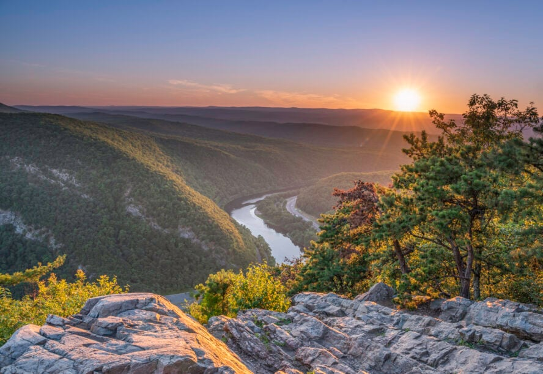

Appalachian Trail
The Appalachian Trail is a large adventure that stretches over 2,000 miles from Georgia to Maine, passing through forests, mountains, and towns. It’s a classic American hiking experience for any and everyone.
Learn More